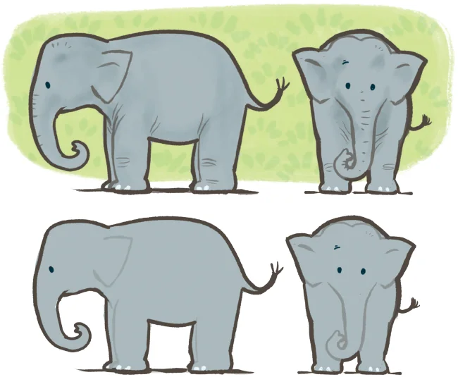
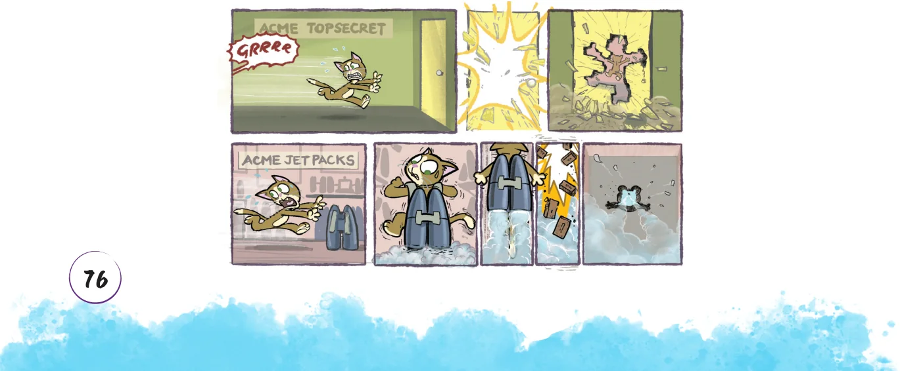

Build it in Your Imagination
We will start this section by practising visualisation. For each prompt, feel free to talk to your partner, gesture, draw it in the air - but do not actually draw on paper!
My method is different. I do not rush into actual work. When I get an idea I start at once building it up in my imagination. I change the construction, make improvements, and operate the device entirely in my mind. - Nikolas Tesla \((1856 - 1943)\), the great Serbian-American engineer and inventor, who made fundamental contributions to electrical engineering and other fields.
- 1.Picture your name, then read off the letters backwards. Make sure
to do this by sight, not by sound - really see your name! Now try with your friend’s name.

- 2.Cut off the four corners of an imaginary square, with each cut going
between midpoints of adjacent edges. What shape is left over? How can you reassemble the four corners to make another square?
- 3.Mark the sides of an equilateral triangle into thirds. Cut off each
corner of the triangle, as far as the marks. What shape do you get?
- 4.Mark the sides of a square into thirds and cut off each of its corners
as far as the marks. What shape is left? When we see a solid object, we are really seeing its profile from a specific viewpoint. Depending on our viewpoint, the outline of this profile can vary dramatically!

Perhaps you’ve noticed interesting profiles of objects yourself, while taking a photograph or observing the shadow of an object? Or, maybe you’ve seen a cartoon like the following, in which a character bursts through a wall and leaves a hole shaped like their outline!


In previous classes, you’ve seen solids that are much simpler than an elephant or cat, such as cubes, spheres, cylinders, and cones. What would the profiles of these look like, from different viewpoints? Can you describe a solid and a viewpoint that would result in each of the following cases? If it helps, you can imagine the solid passing through a wall like Tom did, and leaving a hole of the appropriate shape.
- 5.A solid whose profile has a square outline
- 6.A solid whose profile has a circular outline
- 7.A solid whose profile has a triangular outline
As we saw with the elephant, a given solid might have very different profiles from different viewpoints. Can you visualise solids that have the following contrasting profiles? Spend some time on this, and if you are finding it difficult to visualise, you may look around and use objects that are around you, or that you will make in the next section. Feel free to consider viewpoints from any direction, including directly above the object.
- 8.A solid with a rectangular profile from one viewpoint and a circular
profile from another viewpoint
- 9.A solid with a circular profile from one viewpoint and a triangular
one from another viewpoint
- 10.A solid with a rectangular profile from one viewpoint and a
triangular one from another viewpoint
- 11.A solid with a trapezium shaped profile from one viewpoint and a
circular one from another viewpoint
- 12.A solid with a pentagonal profile from one viewpoint and a
rectangular one from another viewpoint
Are there unique solids for each of the conditions, or can you come up with multiple possibilities?